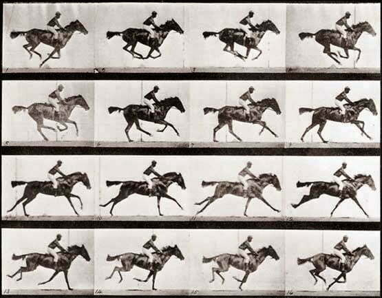
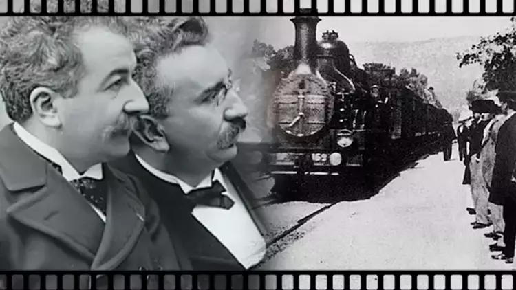
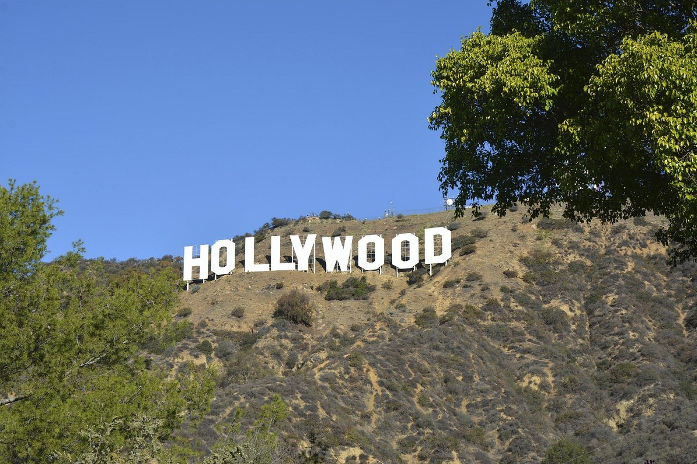
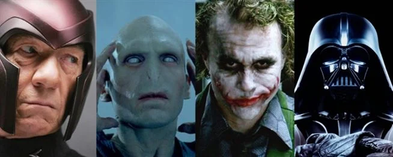

Sinema Nedir?
Sinema, görüntülerin veya çizilmiş desenlerin ışıkla bir perdeye düşürülerek hareketli görüntüler elde edilmesi temeline dayanan sanat dalıdır.
Resimlerin hareketini; düzenli aralıklarla, karanlık bir yerde, özel bir makine aracılığıyla perde üzerinde yansıtarak yeniden oluşturma işidir.
Perdeye yansıtma işleminin yapıldığı salon da sinema adını almaktadır. Sinema kendine özgü bir anlatım aracıdır. Görüntüler ve sesler onun dilinin
unsurları durumundadır. Görüntünün ve sesin temel anlatım öğesi ise kendine özgü bir anlatım tekniği olan senaryo hâlindeki kurgudur.Sinemada ses,
efektlerin ve müziğin de etkisiyle filmde gerçeklik duygusunu uyandıran bir unsurdur. Gelişen sinemada ses, anlamı güçlendiren dramatik bir öge
olarak da kullanılır. Sinema; senarist, yönetmen, oyuncular, görüntü yönetmeni, seslendirme yönetmeni, ışık ve set ekibi gibi çok geniş bir kadronun
ortak çalışmasının ürünüdür. Bireysel bir sanat etkinliği değildir. Peki, sinema nasıl ortaya çıkmıştır?
- MÖ 400’de, Çinlilerin oyuncağı olan ‘harmonikia’da, ışıkla oluşan figürlerin birbirini takip etmesi sonucu hareket eden bir sahne gösterilirdi.
- Sinemanın temelleri ise 19. yüzyılda atıldı. 1826 yılında Joseph Nicephore Niepce, fotoğrafı icat etti.
- Eadweard Muybridge, Atların Hareketi adlı çalışmasıyla ilk kez fotoğrafın ardı ardına gösterimi yaptı.
- 1895 yılında ise Lumiere kardeşler, ilk sinema gösterisini gerçekleştirdi. Bu gösteride, bir trenin bir istasyona gelişi ve insanların buharlı lokomotife binmesi görüntülendi. Bu gösteri ile birlikte, sinema sanatı doğmuş oldu.



Sinemada Popüler Kültür
Sinema her ne kadar teknolojinin sağladığı olanaklar sonucunda sanatsal kaygılarla gelişmeye başlamış bir alan olsa da ticari bir meta olarak değer
taşıdığının keşfiyle profesyonel bir sektör haline gelmiştir. Kültürel değerlerin kullanıldığı ve yeniden üretildiği bu alanın ürünleri ciddi ekonomik
çalışmalar sonucunda profesyonel olarak pazarlanmaktadır. Bu ürünleri yüksek bütçelerle büyük yapım şirketleri hazırlasa da ürünler aslen orta
ve düşük gelir düzeyine sahip toplumun geneli için üretilmektedir. Bu fark üretenle tüketenin eğitimi ve kültürü alanında kendini göstermektedir.
Gerçekten de halkın geneline hitap eden sinema eserlerinin temel bir iletişim stratejisi olarak kolay anlaşılabilir olduğunu söylemek mümkündür.
Bu eserlerin ürettiği söylem değişik yaş, eğitim, kültür ve cinsiyet grupları tarafından rahatlıkla okunabilmektedir.
Tarih boyu popüler kültür halka ait kültür olarak görülmüştür. Bu bakış açısı zamanzaman daha az nitelikli olarak algılanmasına sebep olmuşsa da
içinde bulunduğumuz çağda toplumsal beğeninin kültürel öğelerin üretimi ve bir endüstri olarak tüketiminde etkili olduğunu söylenebilir. Popüler olan
halk tarafından yaygın olarak beğenilen ve tercih edilendir. Bu anlamda popüler kültür; gündelik hayata ilişkin bir kavram ve gündelik hayatın kültürüdür.
Popüler kültürle ilgili birkaç görüşü paylaşmak istiyorum;
- Sinema, toplumsal hareketlerde özellikle Hollywood sineması aracılığıyla aile, ekonomi ve politikaya kadar önemli bir enerjiyi işlevsel olarak kullanmaktadır.
- Kahraman olmak, bir hikâyenin başrolünde yer almak ve kendini dünya için feda etmenin gerekliliğine yönelik mesaj taşıyan filmler, teknolojinin güçlü imkânları seferber edilerek yeni bir dünyanın başlangıcı ve işleyişine yönelik önemli fantastik ve bilimkurgu kodları taşımaktadır. Bu kodlar, kültür üzerine şekillenmektedir.
- İyi ve kötü kavramlarının açıklaması fantastik ve bilim kurgu filmleri üzerinden keskin bir biçimde sunulmaktadır. Tıpkı masallarda olduğu gibi insan doğasının gerçekliği ekarte edilerek, salt iyi ve salt kötüler vardır. İyiler kötülük yapmamakta yalnızca hatalarda bulunmaktadır. Ancak kötüler ezeli kötülerdir. Geçmişleri ve bugünleri kötülükler ile dolu olan ve sonunda iyiler tarafından cezalandırılacak olanlardır.


Bir Filmi İyi Yapan Nedir?
Filmin senaryosunda karakterlerin derinliği, hikayenin bütünlüğü, seyirciyi etkilemesi gibi etmenler, filmin kalitesini doğrudan etkileyecektir.
Bir filmin yönetmeni iyi, senaryosu kötü olduğunda o film kaç defa yapılırsa yapılsın o senaryodan iyi bir film çıkmaz; ama bir filmin yönetmeni
kötü, senaryosu iyi olduğunda o kötü yönetmenli film bile bir dereceye kadar takdir görebilir ve gerekrise film başka bir yönetmenle tekrar çekilip muazzam bir başarıya ulaşabilir.
Şöyle başlayayım: Yönetimden kastım sadece yönetmen koltuğunda oturan adamın yaptıkları değil. Işığından sesine, özel efektlerine kadar iyi yönetilen filmlere
“iyi” dememiz mümkün olur. İyi bir filmde gördüğümüz yangının kokusunu alır, alevini hisseder, izlediğimiz karakterin korkusunu yaşarız. Filmde yaşanan hikayenin içine girmedikçe filmden nasıl tat alabiliriz, ana karakter(ler)le özdeşleşmediğimizde film bizi nasıl etkileyebilir? Birkaç iyi film örneğine bakalım;- 12 Kızgın Adam
- Bisiklet Hırsızları
- Kelebek Etkisi